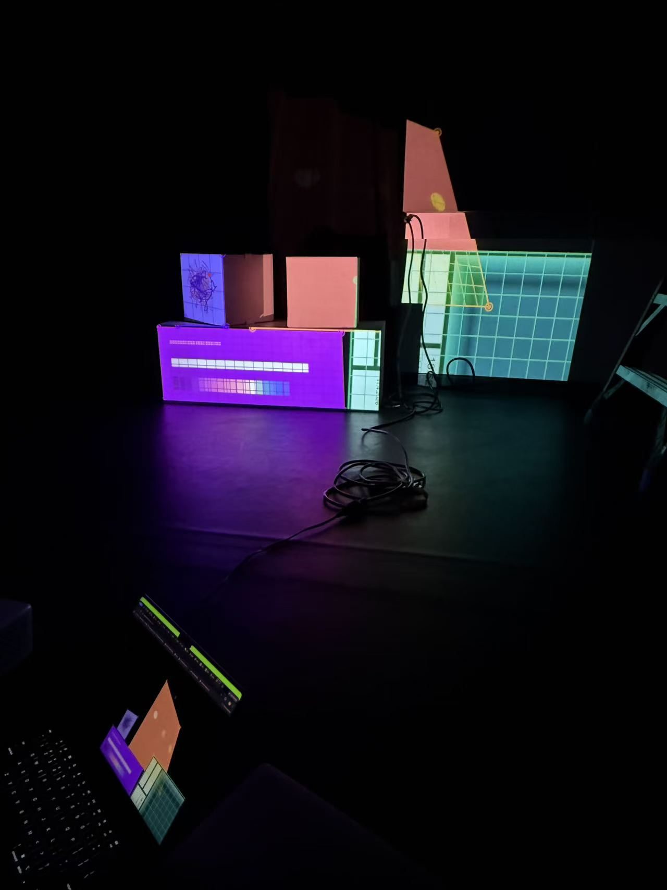
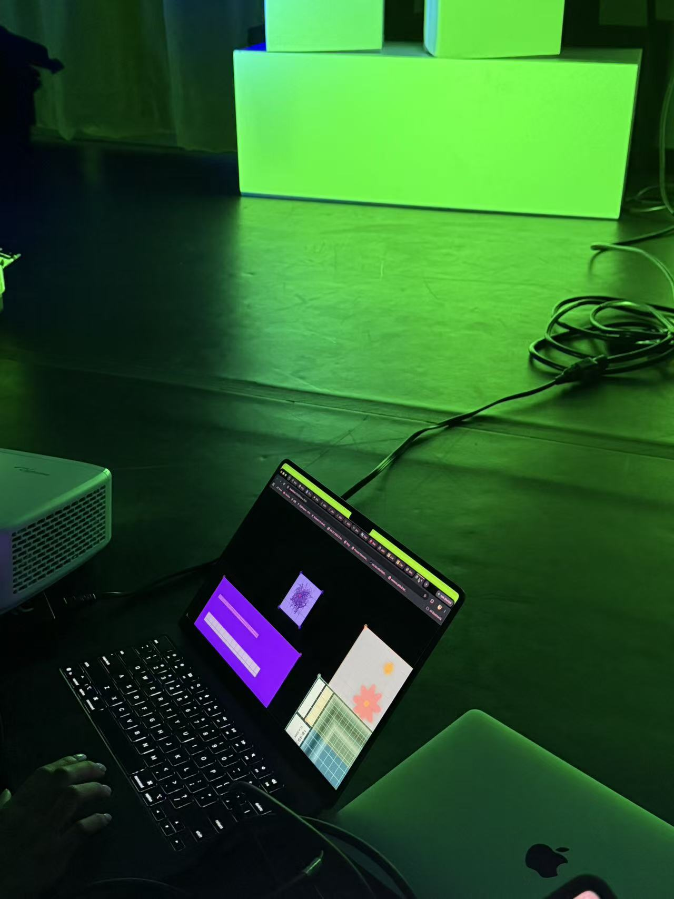

We worked to create a projection mapping of our clocks onto a 2D surface. We worked as a group and did two projection mapping workshops. We created a live share channel and edited our codes inside. In the first, we managed to set up our codes, adding pg and the sketches our clocks are not showing in the right way, then we figured out that the angle modes are different. So we had to adjust our approach to ensure the clocks were displayed correctly on the 2D surface. We all used degree modes in the end. For the second week, we checked and make sure that all our modes are not conflicting with each other. I changed my code to RGB Mode to align with the others, after this my colors works as I expected. We also played with different angles of mapping for the second workshop, which is fun.


